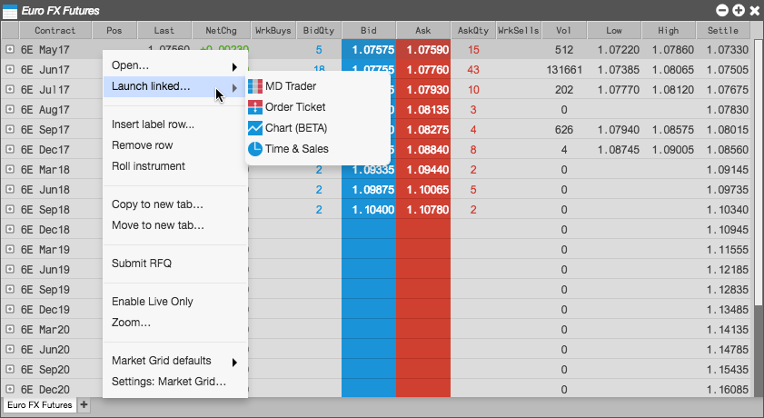

Launching a linked widget
From a Market Grid, you can open widgets linked to the selected instrument. The content of the linked widget updates automatically when you select another instrument in the grid.
To launch a linked widget:
-
Right-click on an instrument row and highlight Launch linked widget.

-
Select the desired widget and move it to the desired location.
The new widget opens with a yellow border.

-
In the Market Grid, select a different instrument.
Notice the widget now contains the market data for the selected instrument.